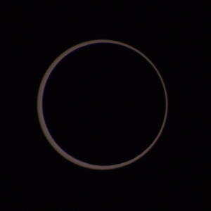
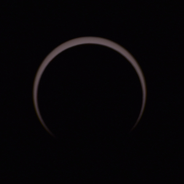

Texas Algebraic Geometry Symposium: Syzygies over Texas!
Texas A&M University 5 April – 7 April 2024.

  | ||||
| ||||
 
The Spring 2024 edition is aligned with an astronomical syzygy—The Great American Eclipse of 2024, which will pass over Texas on Monday, April 8, the day after the conference. The organizers will also provide attendees with eclipse glasses, with which you may look at the eclipse outside of totality.
Speakers:
Pierrick Bousseau University of Georgia
Chiara Damiolini University of Texas
Juanita Duque-Rosero Boston University
David Eisenbud University of California at Berkeley
Maria Fox Oklahoma State University
Alicia Lamarche University of Utah
Hannah Larson University of California at Berkeley
Giorgio Ottaviani Universitá di Firenze